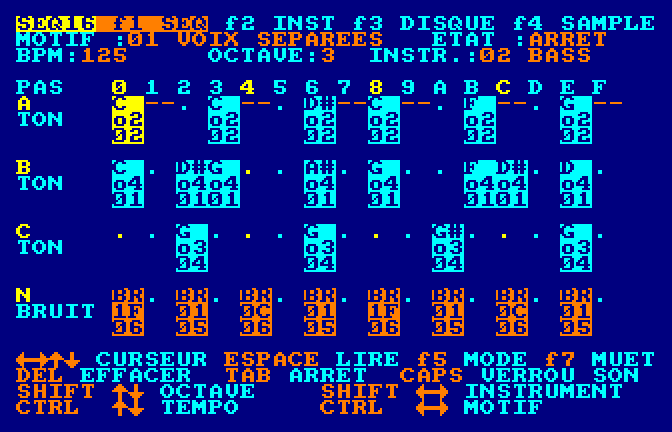
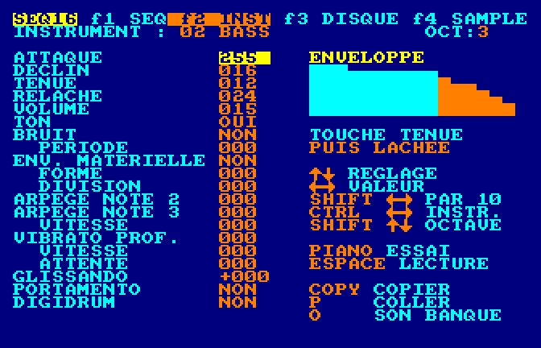
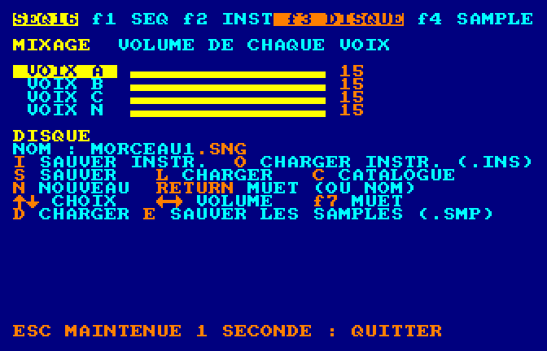
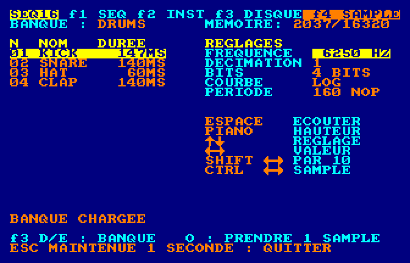

MODE D'EMPLOI
Manuel de SEQ-16
Chaque écran et chaque touche de SEQ-16, avec les textes exactement tels que la disquette française (seq16-fr.dsk) les affiche.
Les textes en jaune, comme VERROU SON, sont ceux de l'écran du CPC. Les touches sont dessinées comme des touches de clavier : CTRL + ←/→ veut dire : maintiens CTRL et appuie sur la flèche gauche ou droite.
Démarrer et quitter
- Insère
seq16-fr.dskdans le lecteur (ou dans un émulateur réglé en CPC 6128). - Tape
RUN"SEQ16puis RETURN. - Choisis un écran avec les touches de fonction du pavé numérique : f1 séquenceur, f2 instrument, f3 mixage et disque, f4 sampler. Les onglets en haut affichent f1 SEQ f2 INST f3 DISQUE f4 SAMPLE.
Pour quitter, maintiens ESC une seconde (ESC MAINTENUE 1 SECONDE : QUITTER). Un simple appui ne suffit pas, pour ne pas perdre son travail par erreur.
Les sons par défaut restent dans le programme : au démarrage et après un nouveau morceau, on retrouve toujours les mêmes 32 instruments. Les instruments 25 à 28 (USER1 à USER4) sont libres pour créer ses propres sons ; 29 à 32 sont les digidrums d'usine (DGKICK, DGSNAR, DGHAT, DGCLAP).
f1 · Séquenceur
Les lignes du haut affichent le numéro du motif (MOTIF :) et le mode, VOIX SEPAREES ou SON COMPOSE, l'état (ETAT : LECTURE ou ARRET), le tempo (BPM:), l'octave de saisie (OCTAVE:) et l'instrument de saisie (INSTR.:).
En dessous, les 16 pas (PAS 0 à F) des voix A TON, B TON, C TON et N BRUIT : chaque case contient une note, une octave et un instrument. En mode son composé, une seule ligne SON 4 V. joue un son composé (SON :) sur les 4 voix à la fois.
Une voix muette affiche MUET à gauche de la grille.

| Touches | À l'écran | Effet |
|---|---|---|
| ←/→ ↑/↓ | CURSEUR | déplacer le curseur ; on entend la note sur laquelle on arrive |
| Touches du piano | poser une note, l'entendre, passer au pas suivant | |
| DEL | EFFACER | effacer la case |
| TAB (ou CLR) | ARRET | arrêt de note (--) |
| CAPS LOCK | VERROU SON | verrouiller l'instrument de saisie |
| ESPACE | LIRE | lecture / arrêt |
| f5 | MODE | voix séparées / son composé |
| f7 | MUET | rendre muette (ou audible) la voix du curseur |
| SHIFT + ↑/↓ | OCTAVE | octave de saisie |
| SHIFT + ←/→ | INSTRUMENT | instrument de saisie (et de la note sous le curseur) |
| CTRL + ↑/↓ | TEMPO | tempo en BPM |
| CTRL + ←/→ | MOTIF | motif précédent / suivant (32 motifs) |
f2 · Instrument
Le numéro et le nom de l'instrument (INSTRUMENT :), l'octave d'essai (OCT:), la liste des réglages à gauche et le dessin de l'ENVELOPPE à droite (TOUCHE TENUE, PUIS LACHEE). Le dessin se met à jour à chaque changement d'attaque, de déclin, de tenue ou de relâche.

| Touches | À l'écran | Effet |
|---|---|---|
| ↑/↓ | REGLAGE | choisir un réglage |
| ←/→ | VALEUR | changer sa valeur |
| SHIFT + ←/→ | PAR 10 | changer la valeur par 10 |
| CTRL + ←/→ | INSTR. | instrument précédent / suivant (32 instruments) |
| SHIFT + ↑/↓ | OCTAVE | octave d'essai |
| Touches du piano | PIANO ESSAI | essayer l'instrument |
| ESPACE | LECTURE | écouter le motif avec le son modifié |
| COPY | COPIER | copier l'instrument (réglages et nom) |
| P | COLLER | coller : l'instrument copié remplace l'instrument affiché |
| O | SON BANQUE | prendre un son dans une banque .INS de la disquette : on choisit la banque, puis l'un de ses 32 sons (flèches, RETURN ; ESC annule) |
Les réglages
Un réglage en retrait dépend de la ligne au-dessus (la période du bruit, la forme et la division de l'enveloppe matérielle, la vitesse de l'arpège, la vitesse et l'attente du vibrato).
| Réglage | Valeurs |
|---|---|
| ATTAQUE | 0 à 255 |
| DECLIN | 0 à 255 |
| TENUE | 0 à 15 |
| RELACHE | 0 à 255 |
| VOLUME | 0 à 15 |
| TON | OUI / NON |
| BRUIT | OUI / NON |
| PERIODE | 0 à 31 |
| ENV. MATERIELLE | OUI / NON |
| FORME | 8 à 15 |
| DIVISION | 0 à 7 |
| ARPEGE NOTE 2 | 0 à 24 |
| ARPEGE NOTE 3 | 0 à 24 |
| VITESSE | 1 à 15 |
| VIBRATO PROF. | 0 à 6 |
| VITESSE | 0 à 255 |
| ATTENTE | 0 à 255 |
| GLISSANDO | valeur signée (+000) |
| PORTAMENTO | OUI / NON |
| DIGIDRUM | OUI / NON : voir Digidrums |
Copier un son dans un autre instrument : choisis l'instrument de départ (CTRL + ←/→), appuie sur COPY, va sur l'instrument d'arrivée, appuie sur P.
Le réglage DIGIDRUM (le dernier) : à OUI, l'instrument joue un sample au lieu d'une note. La ligne PERIODE devient alors SAMPLE suivi du nom du sample : sa valeur est le numéro du sample dans la banque (0 = le premier).
f3 · Mixage et disque
En haut, MIXAGE VOLUME DE CHAQUE VOIX : une barre par voix (VOIX A, B, C, N). En bas, DISQUE : la ligne du nom de fichier NOM : (par défaut MORCEAU1) et les commandes de la disquette.

| Touches | À l'écran | Effet |
|---|---|---|
| ↑/↓ | CHOIX | choisir une voix (A, B, C, N) ou le nom de fichier |
| ←/→ | VOLUME | volume de la voix (0 à 15) |
| RETURN ou f7 | MUET (OU NOM), MUET | muet / audible (sur la ligne du nom : saisir le nom) |
| S | SAUVER | sauver le morceau |
| L | CHARGER | charger le morceau |
| C | CATALOGUE | afficher le catalogue de la disquette |
| I | SAUVER INSTR. | sauver les instruments : les 32 instruments et les 8 sons composés, dans NOM.INS |
| O | CHARGER INSTR. (.INS) | charger une banque d'instruments .INS (flèches, puis RETURN ; ESC annule). Les motifs ne changent pas |
| D | CHARGER | choisir une banque de samples .SMP sur la disquette (pour l'écran f4) : flèches, puis RETURN ; ESC annule |
| E | SAUVER LES SAMPLES (.SMP) | sauver la banque de samples (avec les réglages faits sur f4), sous son nom : DRUMS.SMP… |
| M | SAUVER MOTIF | sauver le motif affiché (celui de f1), seul, dans NOM.PAT : son mode, son tempo et ses 16 pas |
| P | CHARGER MOTIF (.PAT) | charger un motif .PAT de la disquette à la place du motif affiché : la liste montre tous les fichiers par pages de 24 (flèches, RETURN ; ESC annule) |
| N | NOUVEAU | nouveau morceau (appuyer deux fois) |
| ESPACE | écouter le motif pendant le réglage |
Le nom de fichier : descends sur la ligne NOM :, appuie sur RETURN (TAPE LE NOM, PUIS RETURN), tape le nom (8 lettres ou chiffres au plus), puis RETURN. La première lettre tapée remplace l'ancien nom ; DEL corrige. L'extension .SNG est ajoutée toute seule.
Le volume des voix : le circuit sonore du CPC envoie la voie A à gauche, la voie C à droite et la voie B des deux côtés. Selon l'écoute (haut-parleur interne, une seule oreillette, ampli branché sur une seule sortie), une voie peut paraître plus forte que les autres : on l'équilibre ici, et le réglage est sauvé avec le morceau.
f4 · Sampler (Sample Composer)

La banque de sons à gauche (BANQUE :, MEMOIRE:, puis N NOM DUREE), les REGLAGES du son choisi à droite. La première fois que l'on ouvre f4, la banque DRUMS.SMP se charge toute seule (CHARGEMENT DE DRUMS.SMP...). Le sample choisi est en jaune inversé.
| Touches | À l'écran | Effet |
|---|---|---|
| ESPACE | ECOUTER | écouter le sample choisi (ESPACE à nouveau : arrêt) |
| Touches du piano | PIANO HAUTEUR | écouter le sample plus aigu ou plus grave (±12 demi-tons). La rangée du haut, à partir de la touche du DO, joue la hauteur d'origine et monte de demi-ton en demi-ton ; la rangée du bas joue une octave plus bas |
| ↑/↓ | REGLAGE | choisir un réglage : fréquence, décimation, bits, courbe |
| ←/→ | VALEUR | changer sa valeur |
| SHIFT + ←/→ | PAR 10 | changer la fréquence par 10 |
| CTRL + ←/→ | SAMPLE | sample précédent / suivant |
| O | O : PRENDRE 1 SAMPLE | prendre un sample dans une autre banque .SMP : il s'ajoute à la fin de la banque en mémoire (16 samples et 16 Ko au plus) |
| f3 puis D / E | f3 D/E : BANQUE | changer de banque / sauver la banque (réglages et samples ajoutés compris) |
Les réglages sont ceux de la fiche du sample, en mémoire. Ils ne touchent pas aux données.
| Réglage | Valeurs | Effet |
|---|---|---|
| FREQUENCE | 4 000 à 16 129 Hz | la hauteur et la brillance ; plus bas, c'est plus sale. → monte, ← descend |
| DECIMATION | 1, 2, 3, 4, 6, 8 | un échantillon sur N, maintenu N fois : repliement de spectre marqué |
| BITS | 4, 3, 2, 1 | moins de niveaux. En 1 bit, il ne reste que les niveaux 0 et 8 : un « bip » dur et faible |
| COURBE | LINEAIRE, LOG, SATUREE, REPLIEE, INVERSEE | une table de 16 valeurs entre le sample et le volume (ci-dessous) |
| PERIODE | (information) | la durée d'un échantillon en µs, c'est-à-dire en NOP |
- LOG est le rendu fidèle, celui des WAV d'écoute.
- LINEAIRE traite chaque valeur comme une amplitude linéaire, écrite telle quelle dans l'AY qui, lui, est logarithmique. Le son est plus creux et distordu.
- SATUREE multiplie le signal par 2,5 et écrête.
- REPLIEE multiplie aussi par 2,5, puis replie ce qui dépasse.
- INVERSEE retourne la forme d'onde.
Pendant une écoute, l'écran ne répond plus (ECOUTE... (ESPACE : ARRET)) : le processeur ne fait que jouer le sample, interruptions coupées. Les autres voies de l'AY continuent de sonner avec leurs derniers réglages. Si le motif jouait, ses enveloppes, arpèges et vibratos sont gelés jusqu'à la fin du sample. C'est voulu.
Morceaux : sauver et charger
Un fichier .SNG (environ 9 Ko) contient tout le morceau :
- les 32 motifs ;
- les 32 instruments et leurs noms ;
- les 8 sons composés ;
- les volumes et les voix muettes ;
- le nom de la banque de samples utilisée (format version 2).
- Sur f3, descends sur NOM :, appuie sur RETURN, tape le nom, puis RETURN.
- S sauve le morceau (SAUVEGARDE EN COURS..., puis MORCEAU SAUVE). Si un fichier du même nom existe, AMSDOS garde l'ancien sous l'extension
.BAK. - Pour charger : tape le nom de la même façon, puis L (MORCEAU CHARGE). C affiche le catalogue si tu as oublié le nom.
Au chargement d'un morceau version 2, sa banque de samples est rechargée si ce n'est pas celle qui est en mémoire (MORCEAU ET BANQUE DE SAMPLES CHARGES). Si elle n'est pas sur la disquette, le morceau se charge quand même (MORCEAU CHARGE (BANQUE .SMP ABSENTE)). Les morceaux de l'ancien format (version 1, sauvés avant les digidrums) se chargent toujours.
Les messages
| Message | Signification |
|---|---|
| DONNE D'ABORD UN NOM (RETURN) | la ligne NOM : est vide |
| ERREUR DISQUE (DISQUETTE ? NOM ?) | pas de disquette, ou pas de fichier de ce nom |
| CE FICHIER N'EST PAS UN MORCEAU SEQ-16 | le fichier n'est pas un .SNG de SEQ-16 |
| N A NOUVEAU : TOUT EFFACER ? | appuie encore sur N pour commencer un nouveau morceau (NOUVEAU MORCEAU) |
| INSTRUMENTS SAUVES (.INS) / INSTRUMENTS CHARGES | après I / O sur f3 |
| BANQUE DE SAMPLES SAUVEE (.SMP) | après E sur f3 |
| FLECHES PUIS RETURN (ESC : ANNULER) | une liste de fichiers est ouverte : choisis avec les flèches |
| AUCUN FICHIER DE CE TYPE SUR LA DISQUETTE | aucun fichier .INS ou .SMP trouvé |
| AUCUNE BANQUE : f3 PUIS D | f4 n'a aucune banque en mémoire |
| BANQUE TROP GRANDE POUR LA MEMOIRE | la banque .SMP ne tient pas en mémoire |
| LA BANQUE A DEJA 16 SAMPLES | O sur f4 : la banque est pleine |
Les banques de sons
Les banques de la disquette s'ajoutent aux sons par défaut du programme.
Banques d'instruments .INS (13 banques, 416 sons)
Une banque .INS contient 32 instruments, leurs noms et 8 sons composés (848 octets). On peut :
- charger une banque entière : écran f3, touche O, flèches, RETURN ;
- prendre un seul son pour l'instrument affiché : écran f2, touche O, puis choisir la banque et le son ;
- sauver ses propres instruments : écran f3, touche I (fichier
NOM.INS, avec le nom de la ligne NOM :).
| Banque | Contenu |
|---|---|
USINE | les 32 instruments par défaut du programme (pour les retrouver après une autre banque) |
BATTERIE | grosses caisses, caisses claires, charlestons, toms, cymbales, cloche, claves |
BASSES | basses courtes, longues, glissées, « buzzer », sales, wobble |
LEADS | sons de mélodie : vibratos, portamentos, sync, trilles |
NAPPES | nappes lentes, accords tenus, chœurs, orgues |
ARPEGES | accords arpégés à 3 vitesses : majeur, mineur, 7e, sus, diminué… |
EFFETS | lasers, sirènes, pièces, sauts, explosions, moteurs |
BUZZER | l'enveloppe matérielle de l'AY : 4 formes × 3 divisions, et variantes |
CLAVIERS | pianos, cordes pincées, cloches, orgues, vents |
CHIPTUNE | une banque complète pour un morceau de jeu vidéo |
PERCUS | congas, bongos, claves, triangle, tablas, gong |
GLISSES | portamentos, glissandos vers le haut ou vers le bas |
BRUITS | bruit tenu à 10 hauteurs, vent, pluie, mer, train |
Banques de samples .SMP (9 banques)
DRUMS.SMP est la banque par défaut : elle se charge toute seule à la première ouverture de f4. Pour en utiliser une autre : écran f3, touche D, choisis la banque avec les flèches, RETURN, puis f4. Sur f4, la touche O prend un seul sample dans une autre banque et l'ajoute à la banque en mémoire ; f3 + E sauve le résultat.
| Banque | Contenu | Taille |
|---|---|---|
DRUMS | KICK, SNARE, HAT, CLAP (les digidrums d'usine) | 2 Ko |
VOIX | « bonjour », « Amstrad », « SEQ 16 », « 1, 2, 3, 4 » | 13 Ko |
BATTERI2 | batterie façon boîte à rythmes : grosse caisse longue, toms, cloche, crash… (12 sons) | 12 Ko |
PERCUS | congas, bongo, claves, triangle, tambourin, agogo, tabla… (12 sons) | 13 Ko |
EFFETS | laser, zap, explosion, pièce, saut, sirène, alarme, OVNI… (12 sons) | 14 Ko |
BASSES | 10 notes de basse (DO), à jouer avec le piano de f4 | 15 Ko |
NOTES | pincé, piano, cloche, orgue, cuivre, chœur, orchestre… (10 notes, DO) | 14 Ko |
CHIFFRES | « zéro » à « dix » | 11 Ko |
MOTS | « allez », « oui », « non », « encore », « stop », « bravo », « CPC »… (14 mots) | 16 Ko |
Tous les sons sont synthétisés ou dits par espeak : aucun échantillon venu d'Internet, donc aucune question de droits. Les banques sont aussi sur les disquettes de données seq16-inst.dsk (.INS) et seq16-samples.dsk (.SMP).
Les samples, pas à pas
Le CPC n'a pas de convertisseur numérique-analogique. Il joue un sample en changeant très vite le volume d'une voie de l'AY : 16 niveaux sur une courbe presque logarithmique. C'est ce qui donne le grain, et la dégradation est recherchée : grain, repliement de spectre, souffle et hachures sont des effets voulus et réglables.
- Lancer. Insère
seq16-fr.dsket tapeRUN"SEQ16. - Ouvrir l'écran des samples. Appuie sur f4, la touche 4 du pavé numérique. La première fois, la banque
DRUMS.SMPse charge toute seule, et ses 4 sons s'affichent à gauche. - Écouter. Choisis un sample avec CTRL + ←/→. ESPACE le joue à sa hauteur d'origine ; ESPACE à nouveau l'arrête. Les touches du piano le jouent plus aigu ou plus grave : la rangée du haut, à partir de la touche du DO, part de la hauteur d'origine et monte de demi-ton en demi-ton ; la rangée du bas joue une octave plus bas. Pendant l'écoute, l'écran ne bouge plus : c'est normal.
- Salir le son. À droite, choisis un réglage avec ↑/↓ et change sa valeur avec ←/→ (pour la fréquence, avec SHIFT, par pas de 10). Réécoute après chaque changement.
- FREQUENCE : plus bas, c'est plus grave et plus sale.
- DECIMATION : de 2 à 8, des sifflements métalliques apparaissent.
- BITS : de 3 à 1, le son devient de plus en plus « bip ».
- COURBE : SATUREE, REPLIEE, LINEAIRE et INVERSEE déforment le son ; LOG est le son d'origine.
- Changer de banque. Va sur f3 et appuie sur D. La liste des fichiers
.SMPde la disquette s'affiche en bas : choisis avec les flèches, RETURN charge la banque, ESC annule. Reviens sur f4. (Le champ NOM : de f3 sert seulement aux morceaux.SNG.) - Ajouter un sample d'une autre banque. Sur f4, appuie sur O, choisis la banque et le sample : il s'ajoute à la fin de la banque en mémoire (SAMPLE AJOUTE A LA BANQUE).
- Sauver la banque. f3, puis E : la banque est sauvée sous son nom, avec les réglages faits sur f4 et les samples ajoutés.
- Fabriquer ses propres sons sur le PC à partir de fichiers WAV, avec l'onglet SAMPLES SEQ-16 de CPC DISK ou
tools/wav2smp.py.
À savoir
- Une banque fait 16 Ko au plus, soit environ 4 secondes à 8 kHz, ou 5 secondes à 6,25 kHz. Une banque contient 16 sons au plus.
- Si le motif jouait pendant une écoute, il se fige le temps du sample, puis repart.
- Envie d'entendre tout de suite ?
VOIX: f3, D, choisis VOIX, RETURN, puis f4. En BITS 2 ou avec la courbe SATUREE, la voix devient un robot très sale.
Les digidrums : des samples dans le morceau
Un digidrum est un instrument qui joue un sample de la banque chargée au lieu d'une note. Les 4 instruments d'usine 29 à 32 (DGKICK, DGSNAR, DGHAT, DGCLAP) jouent les 4 sons de DRUMS.SMP.
En faire un soi-même, sur l'écran f2
- Mets le dernier réglage, DIGIDRUM, à OUI.
- La ligne PERIODE devient SAMPLE et affiche le nom du sample. Change sa valeur avec ←/→ : 0 = le premier sample de la banque, 1 = le deuxième…
- Le VOLUME règle la force du sample (15 = plein, en dessous : plus doux). Les autres réglages ne servent pas.
- Essaie-le avec le piano : le sample joue tout de suite.
Dans le séquenceur
Pose le digidrum comme une note :
- la hauteur : la note DO de l'octave 4 (rangée du haut du piano, octave de saisie 3) joue le sample tel quel ; chaque demi-ton au-dessus ou au-dessous le rend plus aigu ou plus grave, jusqu'à ±12 demi-tons ;
- la voix choisit la voie de l'AY : A, B ou C. Sur la voix N (bruit), le sample joue sur la voie C, à sa hauteur d'origine ;
- une voix muette (f7) ne joue pas ses digidrums.
Le mode BLOQUANT. Le sample joue en entier à la fin de l'image, interruptions coupées. Ensuite, le séquenceur rattrape le tempo : il avance d'autant d'images que le sample a duré, pour que les pas suivants tombent à l'heure. Pendant le sample, l'écran et le clavier ne répondent plus ; les autres voix continuent de sonner, mais leurs enveloppes, arpèges et vibratos sont gelés. Ce gel fait partie du rendu.
Garde les digidrums courts : moins de 150 ms (les 4 sons de DRUMS.SMP le sont). Un sample plus long fait « bégayer » l'interface et les autres voix.
Limites connues
- La mémoire est pleine. Si f4 affiche PAS ASSEZ DE MEMOIRE, les samples, les digidrums et la touche O de f2 sont désactivés ; le reste fonctionne.
- Les banques de samples doivent tenir dans les 16 064 octets de la mémoire principale (environ 4 secondes à 8 kHz) ; 16 samples au plus.
- La liste des banques (f3, puis D) ne fonctionne que sur le lecteur A.
- Les banques d'instruments se lisent octet par octet : c'est testé dans le simulateur, pas encore sur la vraie machine.
- Le rattrapage du tempo après un digidrum est calculé à partir de la durée théorique du sample : sur 32 mesures, une petite dérive reste possible.
- Un « toc » au début ou à la fin d'un sample est possible, quand le volume passe du réglage du moteur au premier échantillon.
- Au-dessus d'environ 6 kHz, le test de la touche ESPACE allonge un échantillon sur 256 : un très léger grésillement est possible.
Pas encore là
- l'édition des sons composés à l'écran ;
- l'enchaînement des motifs en morceau ;
- renommer les instruments ;
- le copier-coller de blocs ;
- samples : mémoire supplémentaire du 6128, mode HACHÉ, finitions de f4 (forme d'onde, découpe, boucle).
Les notes techniques complètes sont dans le README du dépôt.